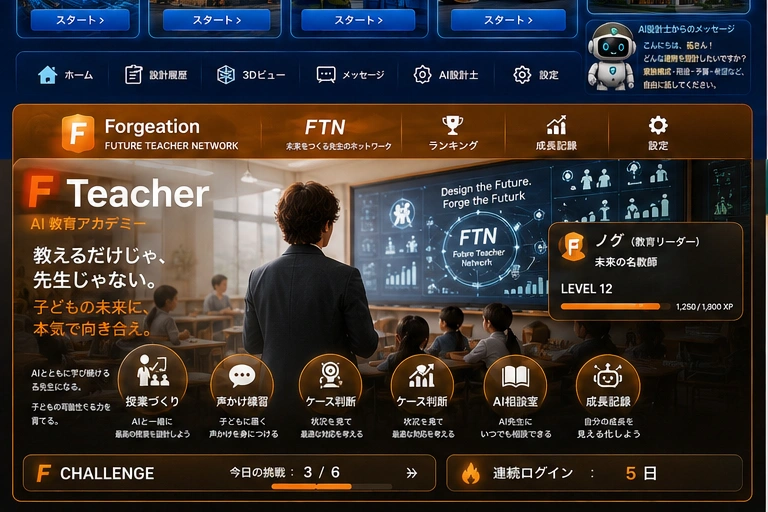

F Teacher
未来をつくる先生が、ここから育つ。
FTN — Future Teacher Network。AIとともに学び続け、子どもの可能性を信じ、未来をつくる力を育てる先生へ。
ボタンを選ぶと、その機能を体験できます。
子どもが「分からない」と手を止めた。最初にどうする？
選択するとXPが反映されます。

FTN — Future Teacher Network。AIとともに学び続け、子どもの可能性を信じ、未来をつくる力を育てる先生へ。
子どもが「分からない」と手を止めた。最初にどうする？